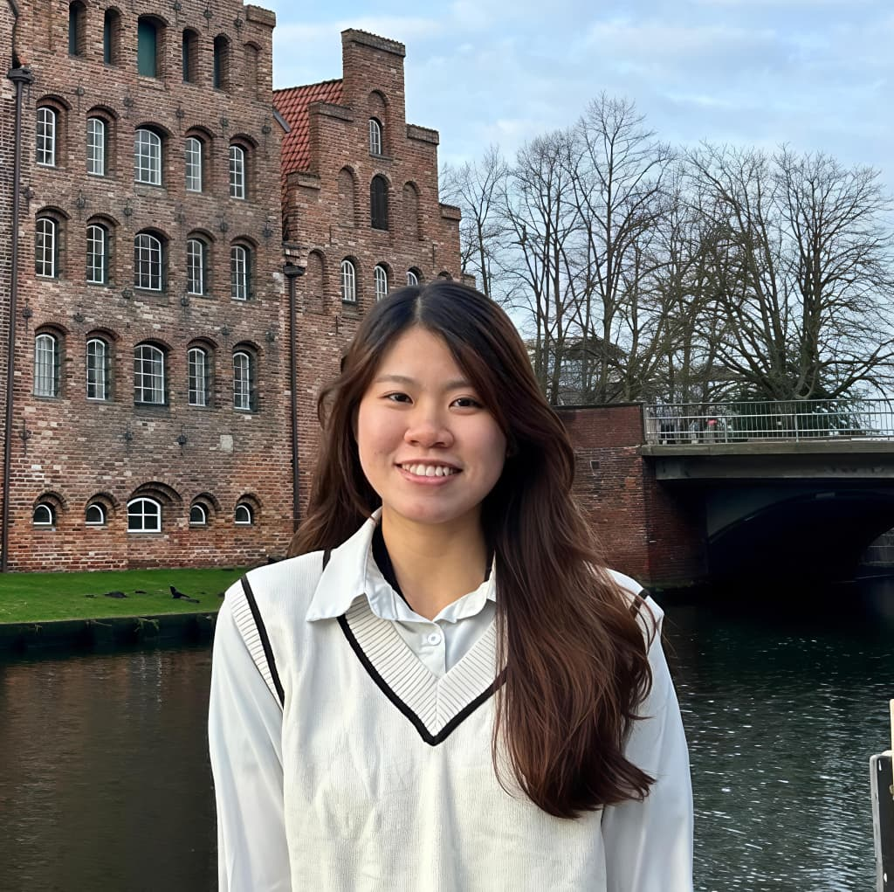

Connie Hii Pei Yee
Manufacturing Engineer | Data-Driven Process Improvement & Quality Control
Manufacturing Engineering graduate with hands-on experience in New Product Introduction (NPI), monitoring 100+ CTQ parameters, and improving process quality through data-driven analysis and statistical control.
Career Goal: To build a career in the semiconductor or high-tech manufacturing industry, focusing on process optimization, quality control, and continuous improvement.
Education
Universiti Teknikal Malaysia Melaka (UTeM)
Mar 2023 – Mar 2026- Bachelor of Manufacturing Engineering with Honours (CGPA: 3.76/4.0)
Hochschule Hannover - University of Applied Sciences and Arts, Germany
Sep 2024 – Jan 2025- Exchange Semester in Mechanical Engineering
- DAAD Scholarship Recipient
- Exposure to international engineering practices and project collaboration


Universiti Teknikal Malaysia Melaka (UTeM)
Oct 2020 – Jan 2023- Diploma of Manufacturing Engineering (CGPA: 3.76/4.0)
Skills
Technical Skills
- Process Monitoring
- Quality Control & Inspection
- Root Cause Analysis
- Statistical Data Analysis
Tools
- SolidWorks
- Minitab
- Microsoft Excel
- Fusion 360
- ANSYS
Soft Skills
- Problem-Solving
- Attention to Detail
- Communication
- Cross-functional Collaboration
Projects
Enhancing thermal stability and fire resistance properties of natural fibre PALF/PLA composite
Description: Developed PALF/PLA composites to enhance thermal stability and flame resistance, supported by SEM, FTIR, and DSC analysis.
Key Contributions:
- Prepared composite samples using solution casting method
- Conducted SEM, FTIR, and DSC analysis to evaluate morphology and thermal behavior
- Analyzed thermal degradation trends and compared with baseline materials
- Interpreted experimental data to assess material performance
Tools/Skills Used: Material characterisation technique (SEM, FTIR, DSC), Microsoft Excel (Data Processing & Graphing)
Outcome: Strengthened hands-on experience in advanced material characterisation techniques


Hydrogen Fuel Cell Prototype
Description: Developed a hydrogen fuel cell prototype with a focus on improving sealing performance and operational efficiency. Designed sealing mechanisms, conducted multiple validation tests, and optimized materials to minimize leakage and enhance voltage output.
Key Contributions:
- Designed and assembled fuel cell components, including sealing systems (gaskets, O-rings)
- Conducted pressure distribution, leakage, and performance testing
- Analyzed voltage output and sealing effectiveness across design iterations
- Collaborated with team members to troubleshoot and optimize design
Tools/Skills Used: Experimental Testing, Data Analysis, Materials Engineering
Outcome / Achievement:
- Identified O-ring sealing as the most effective solution, significantly reducing leakage and improving voltage performance
- Enhanced sealing efficiency through surface coating techniques
Key Learning: Developed understanding of sealing mechanisms and material behavior under pressure. Strengthened problem-solving and iterative testing skills.


Flood Barrier Engineering Design
Description: Designed a portable and effective flood barrier prototype aimed at mitigating flood impact in residential or low-lying areas. The project focused on structural design, ease of deployment, and real-world usability.
Key Contributions:
- Designed overall structure and developed 3D models using SolidWorks
- Optimized design for portability and real-world deployment
- Produced functional prototype using FDM 3D printing
Tools/Skills Used: SolidWorks, 3D Printing (Prototype Development)
Outcome: Recognised for innovation and practical design. Achieved 1st Place in Global Project-Based Learning (GPBL)
Key Learning: Improved ability to design practical engineering solutions.


HDPE Brick Compressor and Moulding Machine
Description: Designed and developed a machine to convert HDPE plastic waste into reusable construction bricks, focusing on sustainable manufacturing and waste reduction. Involved mechanical design, material processing, and fabrication.
Key Contributions:
- Assisted in designing compression and moulding mechanisms
- Contributed to structural design for stability and functionality
- Fabricated components using laser cutting and welding
- Supported assembly and functional testing
Tools/Skills Used: SolidWorks, Fabrication, Manufacturing Processes
Outcome: Bronze Award Winner in the Jejak Inovasi UTeM 2022.
Key Learning: Gained practical experience in integrating design, fabrication, and assembly in engineering projects.
Experience
VS Industry Berhad
Quality Control InternResponsibilities:
- Supported QA during NPI phase
- Performed CPK and process analysis
- Participated in customer meetings
- Prepared and presented weekly reports
Key Achievements:
- Improved understanding of customer quality requirements
- Enhanced communication and reporting skills
Boingtech Malaysia Sdn. Bhd
Quality Control InternResponsibilities:
- Monitored CPK for 100+ CTQ parameters during NPI
- Identified out-of-spec conditions and reported issues
- Supported daily QCC monitoring
- Collaborated with engineering teams
- Performed data analysis and reporting
Key Achievements:
- Supported successful NPI process monitoring
- Contributed to early detection of quality issues
- Strengthened data analysis in manufacturing environment
Extra Curriculum

Society of Manufacturing Engineers Technologist
Role: Executive Committee Member
Responsibilities:
- Coordinated and supported technical workshops and engineering-related activities
- Collaborated with committee members to plan and execute events
- Assisted in on-site problem-solving to ensure smooth event operations
Key Impact: Strengthened teamwork and coordination skills in technical event management. Gained experience in organizing engineering-focused activities.

UTeM Global Project Based Learning 1.0 & 2.0
Role: Mentor
Responsibilities:
- Mentored participants throughout the project design and development process by providing technical guidance and constructive feedback
- Supported teams in problem-solving, idea refinement, and improving overall project feasibility
- Acted as a communication bridge by facilitating real-time translation between participants and organizers
Key Impact: Demonstrated strong leadership, communication, and cross-cultural collaboration skills.


Tokushima University UTeM Academic Centre (TMAC) Design Workshop
Role: Mentor
Responsibilities:
- Assisted in coordinating and supporting the overall workshop flow and participant activities
- Guided participants in assembling LEGO-based robotic systems with a focus on mechanical structure and mechanism design
Key Highlights:
- Supported development of a functional LEGO robot capable of path navigation, object gripping, and storage using an integrated basket mechanism
- Strengthened communication and mentoring skills in a collaborative learning setting
UTeM Winter Solstice Cultural Night Festival
Role: Deputy Head of Public Relations Department
Responsibilities:
- Supported planning and execution of large-scale cultural event
- Managed public relations and external communications
Key Highlights:
- Enhanced event management and public communication skills
- Contributed to successful execution of a university-wide event